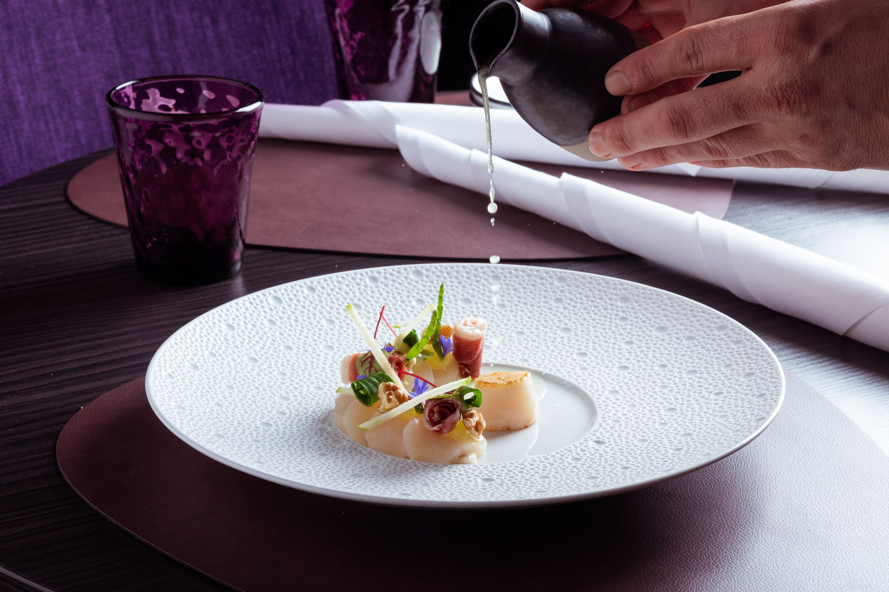
Een avond uit moet een feest zijn
Iedere maand een nieuw menu, geïnspireerd door seizoen en marktaanbod. In het monumentale oude postkantoor in het centrum van Steenbergen.
Het is vanaf het begin tot het einde een groot culinair feestje!★★★★★Elly W. · TheFork, 9,5 uit 91 reviews
Iedere maand een nieuw menu
Kies het Creations Menu in vier of zes gangen, of stel zelf samen van de kaart. Op vrijdag en zaterdag serveren we alleen het Creations Menu.
Speciale wensen of een dieet? Daar houden we altijd rekening mee. Laat het weten bij het reserveren.
Wijn bij het menu
Ruim 100 wijnen, grotendeels uit Europa. Bij het arrangement kiest de sommelier per gang de wijn die past bij de smaken van de chef.
| Arrangement | 4 gangen | 6 gangen |
|---|---|---|
| Wijnarrangement | € 45 | € 65 |
| Prestige wijnen | € 60 | € 90 |
| Alcoholvrij | € 40 | € 60 |
| Water, de hele avond | € 6,50 p.p. | |
Creations Menu by Mark van Loon
"Ik hou van klassiek en tradities, maar vind het leuk om de regels te breken. Geniet ervan!"
Noordzeekrab
Tomaat · Japanse perzik · Avocado
Steak tartaar*
Geserveerd in 2 bereidingen
Oester & gerookte paling*
Prei · Aardappel · Kaviaar
Pladijs & mosselen
Gezouten citroen · Fijne groenten · Verveine
Eend
Biet · Knolselder · Kers · Groene peper
Wagyu Kagoshima A5
Geschroeid · Ponzu · Truffel
supplement € 35Kaas
Selectie uit binnen- en buitenland
i.p.v. dessert € 10 · als extra gang € 18Venkel & braam
Balsamico · Hangop · Vanille
* bij het menu van zes gangen
Noordzeekrab
Tomaat · Japanse perzik · Avocado
Pladijs & mosselen
Gezouten citroen · Fijne groenten · Verveine
Steak tartaar
Geserveerd in 2 bereidingen
Eend
Biet · Knolselder · Kers · Groene peper
Oester & gerookte paling
Prei · Aardappel · Kaviaar
Wagyu Kagoshima A5
Ponzu · Truffel
Kaas
Selectie uit binnen- en buitenland
Venkel & braam
Balsamico · Hangop · Vanille
À la carte van dinsdag t/m donderdag. Op vrijdag en zaterdag serveren we alleen het Creations Menu.
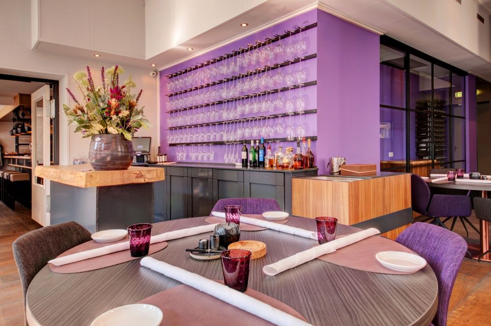
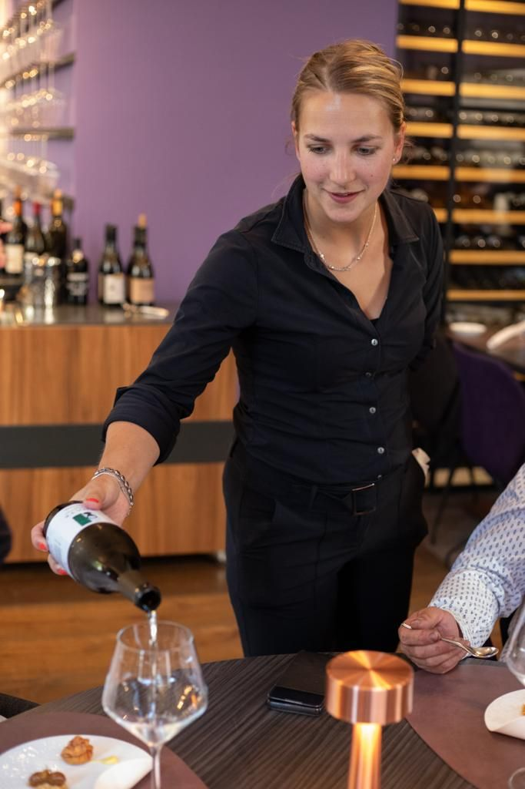
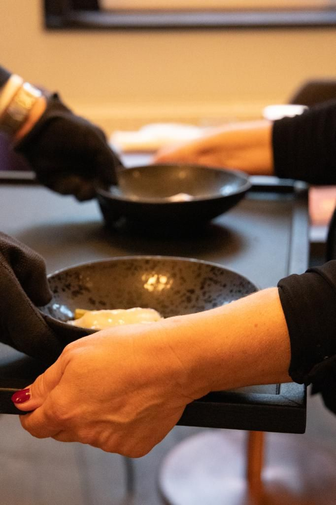
Zo verloopt uw avond
Klassieke basis, wereldse gerechten en kookstijlen. Kwaliteit en gastvrijheid staan bij ons altijd voorop.
Ontvangst met een aperitief
We ontvangen u met een collectie speciaal geselecteerde, bruisende aperitieven.
De chef licht het menu toe
Mark van Loon komt zelf aan tafel om zijn menu toe te lichten.
Gerechten met bijpassende wijn
Uit ruim 100 wijnen, met een voorliefde voor de Bourgogne. Ook per glas.
De kaaswagen of de zoete trolley
Veertig tot vijftig perfect geaffineerde kazen, of een trolley vol huisgemaakte zoetigheden.
Uit onze keuken
Innovatieve technieken en signature gerechten, met een klassieke basis.
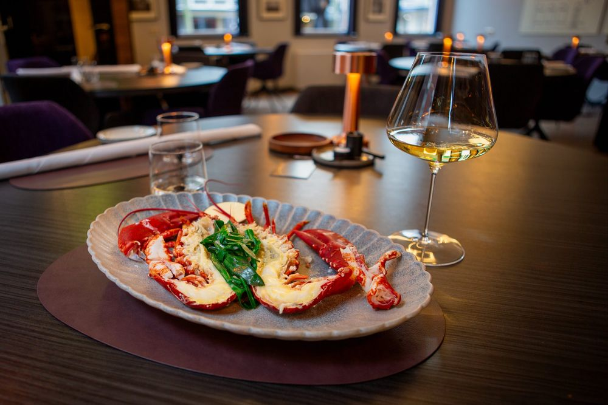
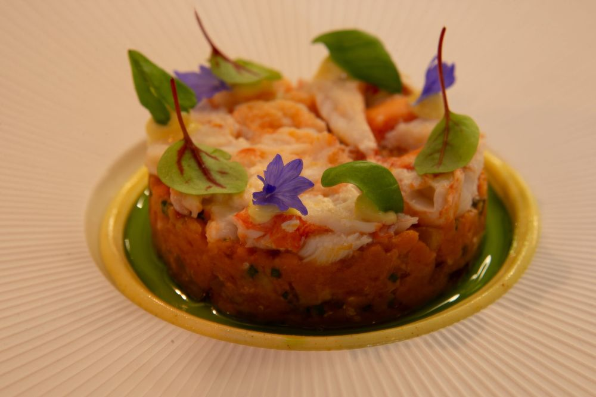
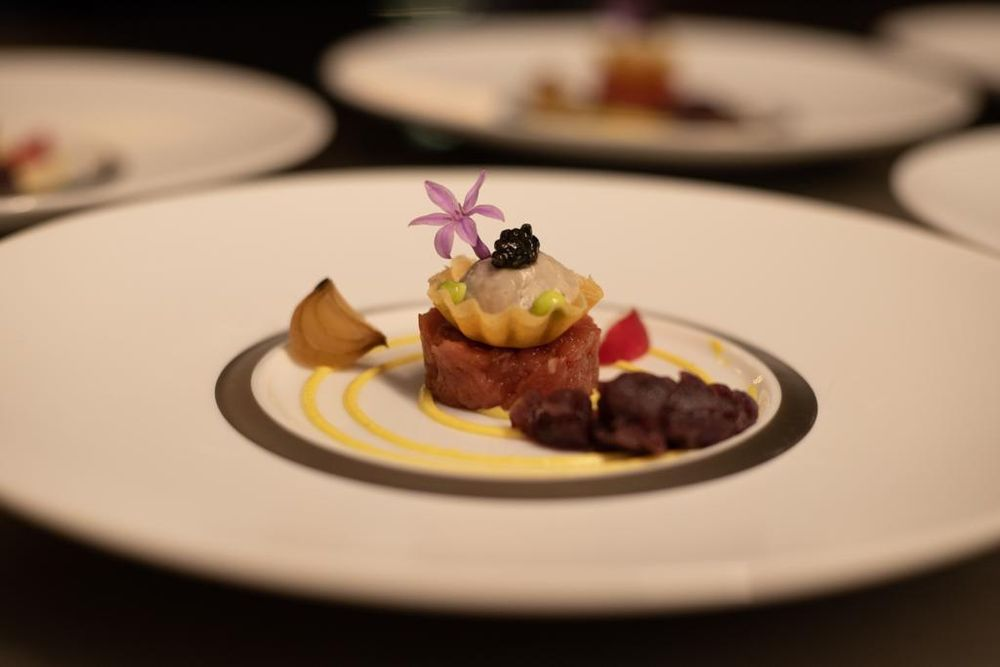
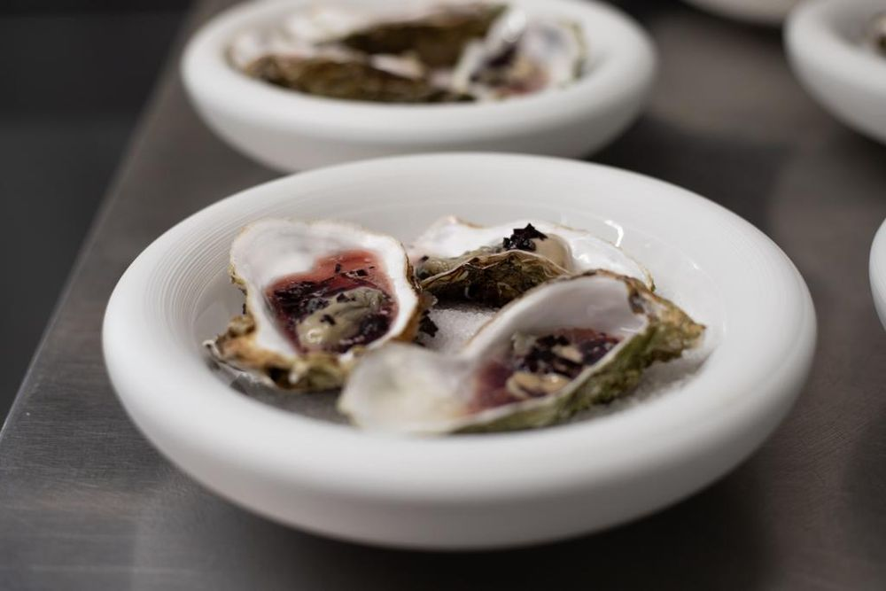
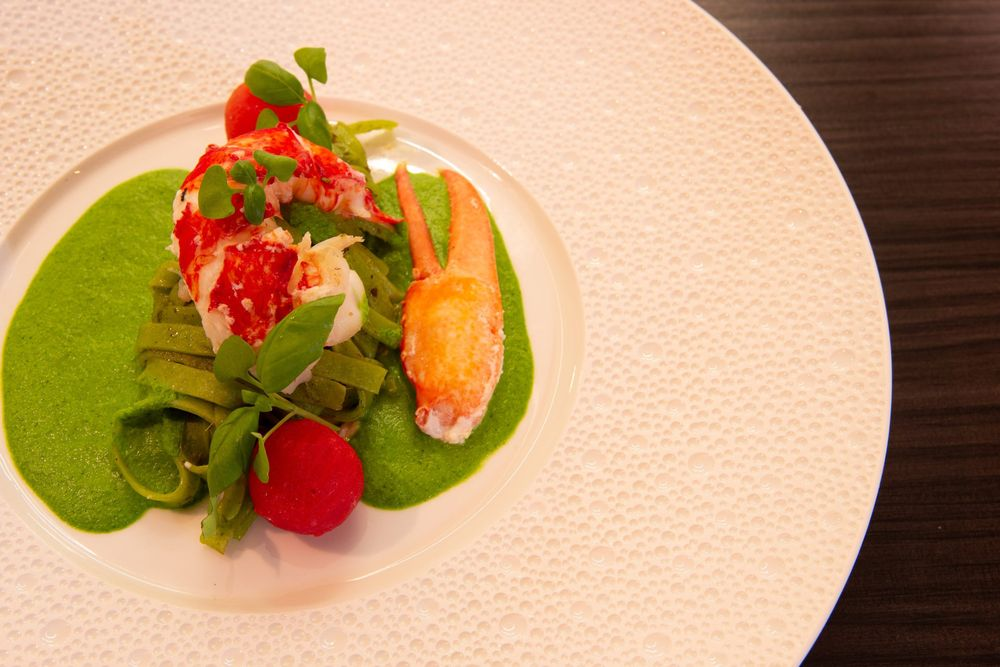
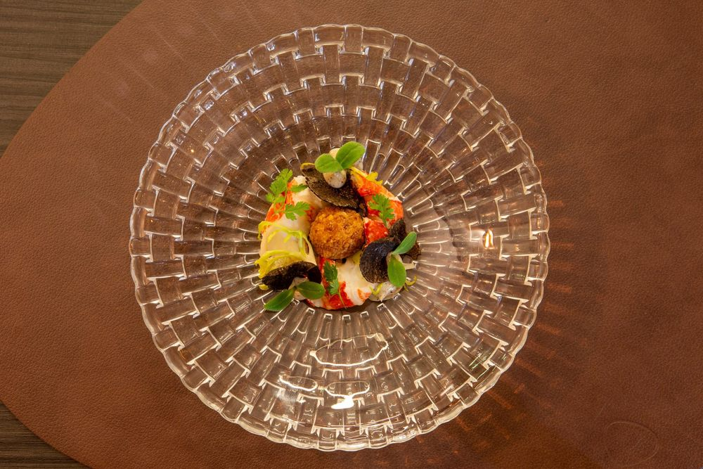
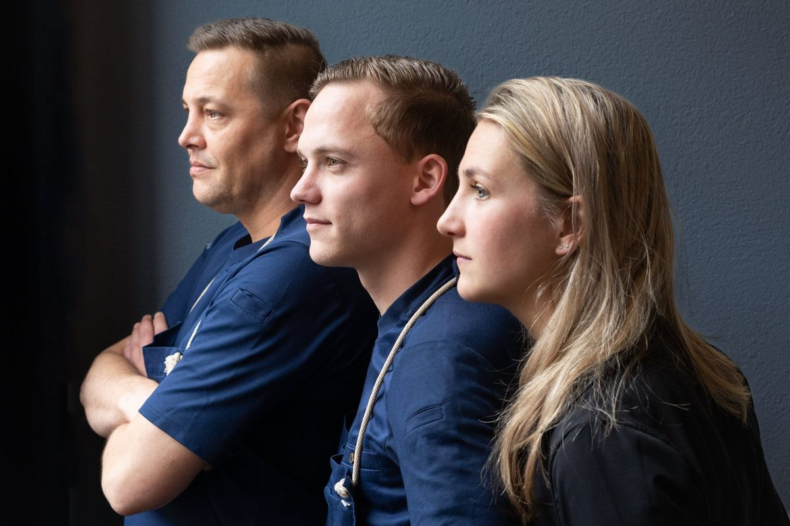
Over In de Oude Stempel
"De gast is een avond uit en dat moet een feest zijn."
Ons restaurant zit in het monumentale, voormalige postkantoor in het centrum van Steenbergen. Patron cuisinier Mark van Loon kookt vanuit een klassieke basis en combineert dat met wereldse gerechten en kookstijlen.
Iedere maand stellen we een nieuw menu samen, geïnspireerd door het seizoen en wat de markt die maand te bieden heeft.
Wij zoeken versterking
Zelfstandig werkend kok, chef de partie of aankomend sous-chef, en een leerling-kok (niveau 2, 3 of 4). Wil je je creatief ontwikkelen in onze keuken? Stuur ons een berichtje.
Wat gasten zeggen
gemiddeld uit 91 reviews op TheFork
"Een heerlijke en sfeervolle avond gehad bij In de Oude Stempel. Het eten was erg lekker en het wijnarrangement was uitstekend afgestemd op de gerechten."
"Mark van Loon en zijn team zijn bijzonder goede koks. Wat een creativiteit! Alle smaken zo subtiel samengesteld."
"We hebben een subliem 6 gangen diner gehad en de bediening was grandioos. De wijnen waren ook fantastisch."
"Verrassende originele en heerlijke gerechten, mooie amuses. Attente bediening."
Reserveren
Reserveer online of bel ons. We zien u graag aan tafel.
Openingstijden
| Dinsdag t/m zaterdag | vanaf 18.00 |
| Zondag en maandag | gesloten |
Reserveer uw tafel
Kies online een datum, tijd en het aantal personen. Laat bij het reserveren gerust weten of er rekening gehouden moet worden met een dieet of speciale wensen. De keuken is open van 18.00 tot 21.00 uur.
Liever ongedwongen eten? In hetzelfde pand zit onze Brasserie Puur.